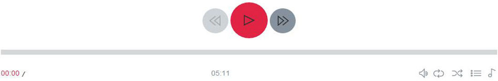

正在播放歌曲：

《天河之恋》 - 歌词
作词：潘光沛
作曲：潘光沛
编曲：伦永亮
监制：伦永亮
歌词 将音乐唤醒
某日作首新歌 苦思词中怎改
于欢笑里 于苦痛里
值得写嘅系爱
音乐 浮现脑海入面
捉不到时 睇不见
意念来自每一天 出于每一天
～～
乐想 完全是爱念
泉源是你 于心里面
敲动着心内琴键
谱出爱歌 给你 Woo...
有段作好新曲 推敲词中怎写
于璀璨处 于阴暗处
关心嘅只有爱
～～
音乐 常在我生活入面
捉不到时 睇不见
意念是来自每一天 飞奔到笔尖
乐想 完全是爱念
泉源是你 于心里面
敲动着心内琴键 谱出爱歌给你
～～
歌词 将音乐唤醒
乐想 完全是爱念
泉源是你 于心里面
敲动着心内琴键
心曲里 只有 爱......
--------音乐间奏--------
心曲里 只有 爱......
王珂迩个人简历 籍贯：山东 身高：166cm 血型：A 星座：处女座 专业：民族声乐 导师：戴滨教授 中国音乐学院声歌系硕士研究生； 北京歌剧舞剧院青年女高音独唱演员； 中国电视艺术家协会会员。 学习经历 2012年 考取中国音乐学院声歌系民族声乐硕士研究生（全日制），师从民族声乐教研室主任、研究生导师戴滨教授。 2008年 本科毕业考入北京歌剧舞剧院工作 2004年 以山东赛区专业第一名的成绩考入沈阳师范大学音乐学院，师从张书彬老师。 2002年 考入山东省临朐第一中学 获奖经历： 2014年 荣获“第七届中国绿色宝贝”最具人气奖； 2014年 荣获“中国声乐国际大赛”（新加坡）成人组民族唱法独唱金奖 2013年 参加“多彩贵州”全国歌唱大赛，荣获总决赛10强； 2010年 加入“1+3组合”，参加星光大道并荣获月冠军； 2006年 参加“辽宁省首届青年歌手大赛”，荣获民族组一等奖； 2005年 参加“东方青少年艺术明星大赛”，荣获民族唱法银奖。